| |
|
BOYKESİT PAFTALARI İÇİN ŞABLONLAR: SABİT KILAVUZ ÇİZGİLERİ
|
Bu menüden, her paftada KM'lerden, kotlardan veya her projenin kendi elemanlarından bağımsız olan farklı sabit elemanları tanımlamak mümkündür.
Başlık için Semboller
Tekil Yatay Çizgiler Eşit Aralıklı Yatay Çizgiler Eşit Aralıklı Dikey Çizgiler Eşit Aralıklı KM'lerin Etiketlenmesi Güzergah Adının Etiketlenmesi Ölçekler için Semboller Katların Etiketlenmesi (km, hm, 20 m) Antet için Veriler Geopak 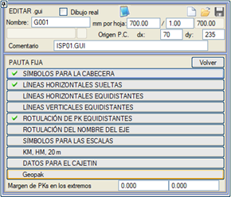
Uçlarda KM Boşluğu seçeneği ile bilgi bandımızın (gitarın) başlangıcını ve sonunu yatay bir miktar ayırabiliriz. Başlık için Semboller Burada, bilgi bandı (gitar) için hangi başlıkların kullanılacağı belirtilir. Başlık, her satırda gösterilecek veri türünü bildiren etiketli tablosal sembollerden, metin tipi bir değeri (güzergah adı gibi) ve sayısal bir değeri (KM, kırmızı kot, azimut,...) belirtmek için kullanılan etiketlere ve sayısal etiketlere kadar her şeyi kapsar: 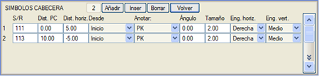
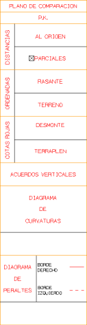
Tekil Yatay Çizgiler Burada, bilgi bandının gridinin yatay çizgileri herhangi bir konumda tanımlanır. 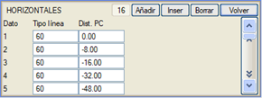
Her tekil çizgi için tipini ve karşılaştırma düzlemine olan mesafesini belirtmek gerekir. Tipin negatif bir değerle belirtilmesi, bu çizgilerin gösterilmemesine neden olur. Eşit Aralıklı Yatay Çizgiler Bilgi bandının gridinin yatay çizgileri arasındaki tip ve eşit aralık belirtilir (bu şekilde sistematik hale getirilebilen çizgiler için). Tipin negatif bir değerle belirtilmesi, bu çizgilerin gösterilmemesine neden olur. 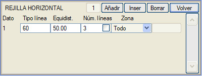
Ayrıca, her bir eşit aralık koşulunu sağlaması gereken çizgi sayısı, karşılaştırma düzleminden başlayarak, ve bu çizgilerin sadece arazi altında mı yoksa tüm boykesit alanında mı gösterileceği belirtilir. Çizgi sayısı artık otomatik olabilir ve otomatik eşit aralıklı dikey çizgilerin yüksekliği gibi, karşılaştırma düzlemi, kırmızı kot ve arazi kotlarına ve tanımlanmış olan parametrelere bağlı olarak hesaplanacaktır. Eğer birden fazla eşit aralıklı yatay çizgi verisi oluşturulursa, kot sadece tanımlanan son seriye etiketlenir. Bölge'nin Segment modunda, dikey eksenin her iki tarafına o mesafeye kadar yatay bir segment çizmek için mm cinsinden bir mesafe de tanımlanır. Böylece örneğin: Her 5'te bir segment ve her 25'te bir Tam çizgi olabilir. Listenin sonuncusu kot etiketlerinin eklendiği olduğu için, sıraya bağlı olarak tüm segmentler veya sadece tam olanlar etiketlenebilir. Segment seçeneğine benzer şekilde, bilgi bandının son kısmında bir segment çizme imkanı (Son Segment). Eşit Aralıklı Dikey Çizgiler Bilgi bandının gridinin dikey çizgileri arasındaki tip ve eşit aralık belirtilir (bu şekilde sistematik hale getirilebilen çizgiler için). Baş./Bit. Karş. Düz. Mes. ile bu çizgilerin hangi dikey yükseklikte başlayıp bittiği belirtilebilir, her pafta için kırmızı kot ve arazi maksimum kotlarına göre otomatik olarak hesaplanması etkinleştirilebilir. Tipte negatif bir değer, bu çizgilerin gösterilmemesine neden olur. KM Eşitliklerinden türetilen kullanıcı KM'lerinin katlarının alınmasını seçme imkanı vardır. 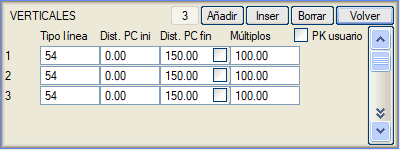
Eşit Aralıklı KM'lerin Etiketlenmesi Burada, bir sembol tipiyle KM'lerin etiketlenmesi için bir düzen belirlenebilir. Aşağıdaki seçenekler kullanılabilir: 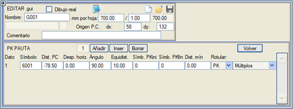
Güzergah Adının Etiketlenmesi Güzergah adını (ve numarasını, takma adını vb.) boykesitin her sayfasında belirtilen etiket veya sembol stiliyle etiketlemeyi sağlar. Etiketin sayfa başlangıcından yatay ve dikey konumu, boyutu ve açısı ile kullanılacak bağlantı noktası belirtilebilir. 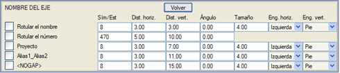
Ölçekler için Semboller Buradan programa, yatay ve/veya dikey ölçekleri, belirtilen sembolle ve karşılaştırma düzleminden belirli bir mesafede etiketlemesi söylenebilir. Ayrıca bir yatay öteleme ve bir açı da belirtilebilir. 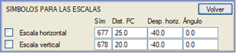
Varsayılan olarak, program yatay ölçek için 677 ve dikey ölçek için 678 sembol tipini sunar. Tipin negatif olarak belirtilmesi, bu sembollerin gösterilmemesine neden olur. Katların Etiketlenmesi (km, hm, 20 m) Her kilometre, hektometre, 50, 25, 20 veya 10 metrede bir sayısal etiketleri, belirtilen sembolle, karşılaştırma düzleminden belirli bir mesafede ve verilen bir yatay öteleme ve açıyla etiketlemeyi sağlar. 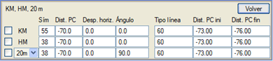
Ayrıca, belirtilen çizgi tipiyle ve karşılaştırma düzlemine olan mesafelerle belirlenen uzunlukta işaretler de etiketler. Tipin negatif olarak belirtilmesi, sembollerin ve/veya çizgilerin gösterilmemesine neden olur. 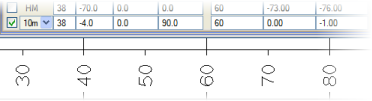
Antet için Veriler Burada, her paftanın başlangıç ve bitiş KM'leri, antetin belirli bir değişken metin alanında ve belirli bir formatta etiketlenebilir. Antete yazdırılan KM'lerin, KM Eşitliklerinden türetilen kullanıcı KM'lerine karşılık gelmesi mümkündür. 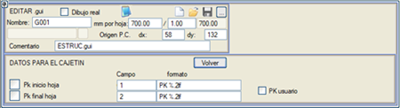
Geopak Geopak tarzı bilgi bandı (gitar) tasarımı. 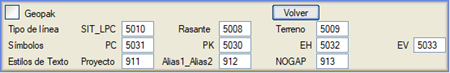
|